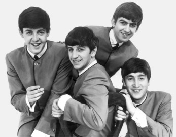
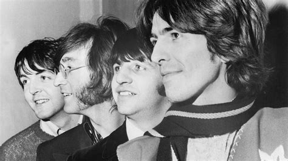

Story and summary
(1960–1970)
Beatles, British rock group that came to personify the counterculture of the 1960s. Its principal members, all born in Liverpool, Eng., were Paul McCartney, John Lennon, George Harrison, and Ringo Starr. The group began with the pairing of McCartney and Lennon in 1956; Harrison joined in 1957, and Stu Sutcliffe and Pete Best later. In 1960 they adopted the name the Beatles. In 1962 they signed a recording contract and replaced Best with Starr (Sutcliffe had left the group in 1961). The release in 1962–63 of such songs as “Please Please Me” and “I Want to Hold Your Hand” made them England’s most popular rock group, and in 1964 “Beatlemania” struck the U.S. Originally inspired by Chuck Berry, Elvis Presley, Little Richard, and Buddy Holly, among others, their direct, energetic songs kept them at the top of the pop charts. Their long hair and tastes in dress were influential throughout the world, as were their experimentation with hallucinogenic drugs and Indian mysticism and their involvement with the politics of peace. From 1965 to 1967 the Beatles’ music rapidly evolved, becoming increasingly subtle, sophisticated, and varied—ranging from ballads such as “Yesterday” to the psychedelic hard rock of “Tomorrow Never Knows.” Their public performances ended in 1966. Albums such as Rubber Soul (1965), Revolver (1966), and The Beatles (“White Album,” 1968) set new trends in rock. In 1967 they produced Sgt. Pepper’s Lonely Hearts Club Band, an album novel for its conception as a dramatic whole, use of electronic music, and character as a studio work not reproducible onstage. They appeared in the films A Hard Day’s Night (1964) and Help! (1965). The group dissolved in 1970. In 1988 the Beatles were inducted into the Rock and Roll Hall of Fame, and Lennon (1994), McCartney (1999), and Harrison (2004) were also inducted as solo performers.
Every Beatles album in order (1963-1970)
Albums(Audio)